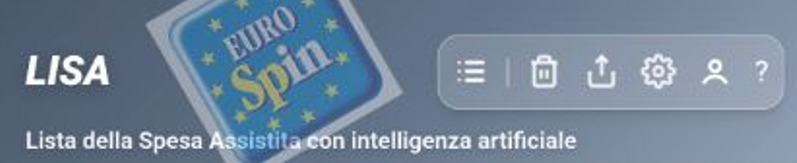
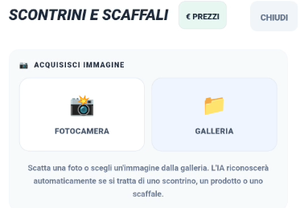
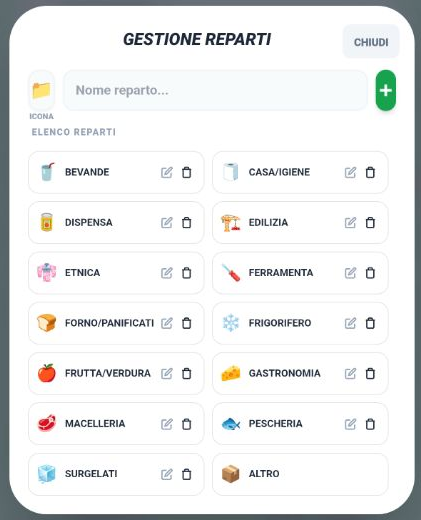
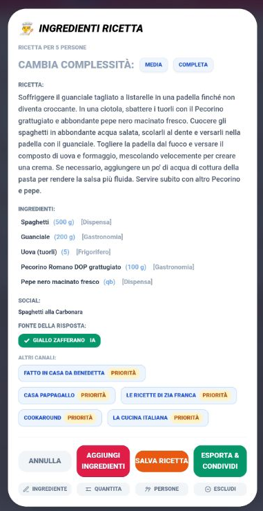
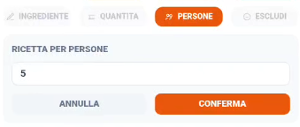

Manuale Utente LiSA
Benvenuto in LiSA, la tua assistente personale per la spesa! Questa guida rapida ti aiuterà a orientarti tra le funzionalità principali.
📚 Manuali Completi
Per una guida approfondita, puoi scaricare i manuali in formato Markdown:
Panoramica dell’interfaccia
Header e Barra Funzioni

- Lista: Gestisci prodotti e analisi AI.
- Configurazione: Impostazioni app.
- Account: Backup e Chiavi AI.
Utilizzo in Negozio
Utilizzo dei codici alla Cassa
Quando sei arrivato al momento del pagamento, LiSA rende tutto semplicissimo:
- Accesso Rapido: Il logo della carta fedeltà del negozio selezionato è sempre visibile nell'header.
- Tutto schermo: Fai doppio click sul codice a barre o QR per aprirlo a tutto schermo. La luminosità aumenterà automaticamente per facilitare la scansione.
- Codici Speciali: Accedi velocemente a Codice Fiscale e Lotteria degli Scontrini tramite i tasti rapidi.
Gestione Scontrini e Prezzi
Usa l'analisi Scaffali per registrare i prezzi velocemente mentre fai la spesa. L'analisi Scontrini è più potente ma richiede una foto nitida e piatta.
Costo per Unità: LiSA calcola il prezzo al kg/litro per permetterti di confrontare formati diversi e trovare il vero risparmio.

Strategia Consigliata: Scatta foto rapide a scontrini e cartellini in negozio e elaborale con calma a casa per non rallentare la tua spesa.
Gestione Prodotti e Reparti

- Libreria Prodotti: In Impostazioni > Prodotti trovi l'archivio di tutto ciò che LiSA ha imparato. Qui puoi correggere nomi e prezzi.
- Personalizzazione Reparti: Adatta l'ordine dei reparti al percorso fisico che fai nel tuo supermercato preferito per trovare i prodotti nell'ordine giusto.
- Icone Emoji: Puoi assegnare un'emoji a ogni reparto per rendere la lista più visiva e immediata.
Assistente Chef e Ricette
Scrivi "Ricetta [piatto]" per attivare l'IA. LiSA cercherà sui migliori canali social (Giallo Zafferano, Benedetta, ecc.).

- Proporzioni: Cambia il numero di persone

per ricalcolare dosi e ingredienti.
- Esclusione: Deseleziona gli ingredienti che hai già in casa prima di aggiungerli alla lista.
Comandi Vocali e IA
L'IA di LiSA capisce il linguaggio naturale:
- LISTA: "Aggiungi latte e 2 pacchi di pasta".
- ELIMINAZIONE: "Togli il burro dalla lista".
- GENERICA: "Qual è il prodotto più calorico in lista?".
Veloce: Comandi come "Pulisci i presi" o "Usa il colore blu" vengono eseguiti istantaneamente senza passare dall'IA.
Per assistenza completa, consultate il Manuale Completo tramite i link in alto.